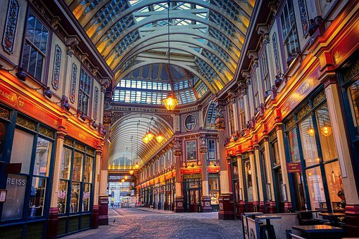
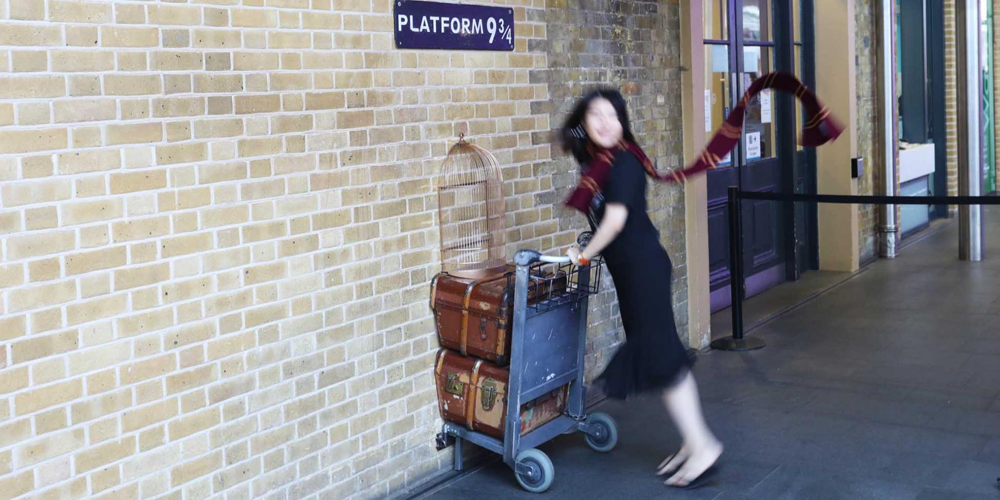
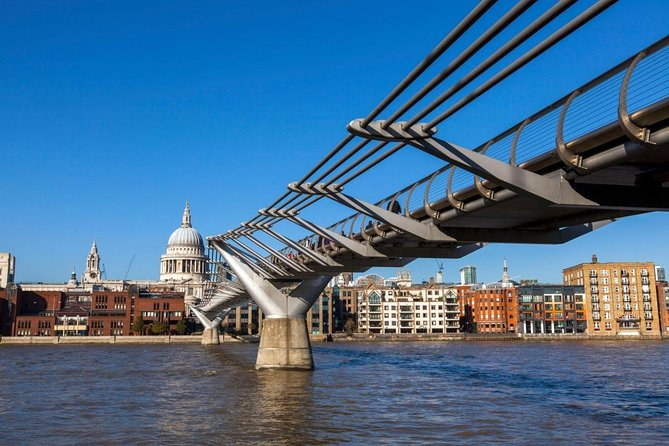
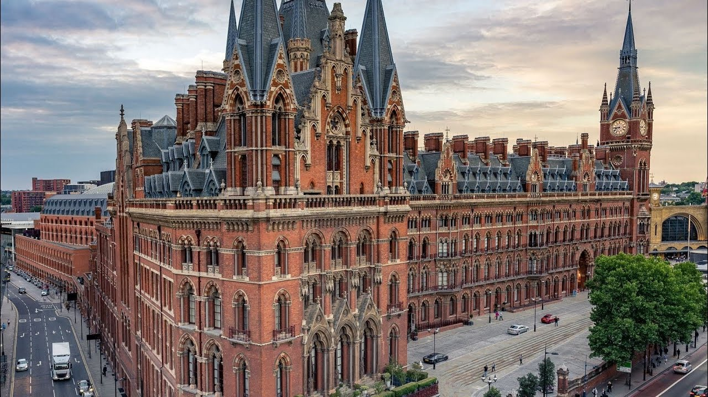
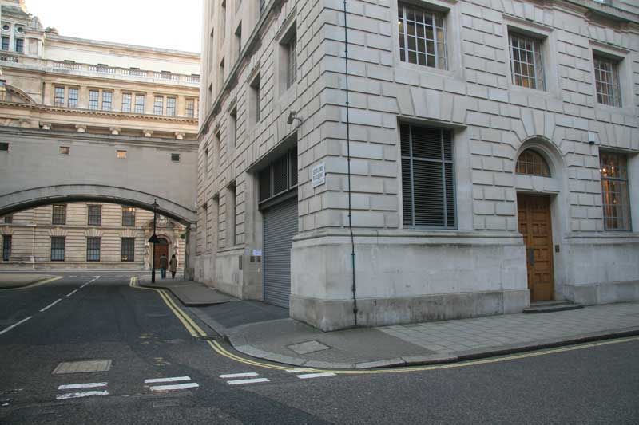

JK. Rowling, a través dels llibres de Harry Potter, ens explica algunes de les maravelles d'Anglaterra, com ara costums o ensenyant-nos llocs increïbles de Londres que segurament no estarien apuntants a la vostra llista de llocs a visitar de Londres, i que són realment increïbles. A continuació us hem preparat un llistat de llocs on van ser rodades diferentes escenes de les pel·lícules de Harry Potter a Londres.
Leadenhall Market és un mercat victorià preciós que es va utilitzar per rodar algunes de les escenes de Harry Potter. Es va fer servir per gravar l'exterior de les botigues màgiques de Diagon Alley.
Si teniu pensat anar a Londres, no us podeu perdre l'oportunitat d'anar a l'andana més famosa del món. Situada a l'estació de tren de St. Pancras, des d'aquí surt el tren Hogwarts Express. Hi trobareu la placa que indica que, efectivament, esteu a l'andana 9 i 3/4, acompanyada d'un carro que atravessa la paret. És el lloc perfecte per fer-vos una foto.
El Millenium Bridge de Londres és el pont que es destrueix a la sisena pel·lícula de Harry Potter. Realment és un pont peatonal molt famós que creua el riu Tàmesis dissenyat per l'arquitecte Norman Foster.
Just al costat de l'estació de King's Cross hi ha l'hotel St. Pancras Renaissance, l'antic edifici de l'estació d'arquitectura neo-gòtica. És des d'aquest hotel que el Harry i el Ron agafen el Ford Anguila volador de la familia Weasley després de perdre el tren a la segona pel·lícula.
Whitehall i Old Scotland Yard van ser utilitzats per representar les organitzacions muggles, i és la llar dels polítics muggles. A Old Scotland Yard es van gravar vàries escenes de l'última pel·lícula de la saga.
I si voleu descobrir els principals monuments i edificis de Londres... aquí trobareu les principals atraccions turístiques que no us podeu perdre!